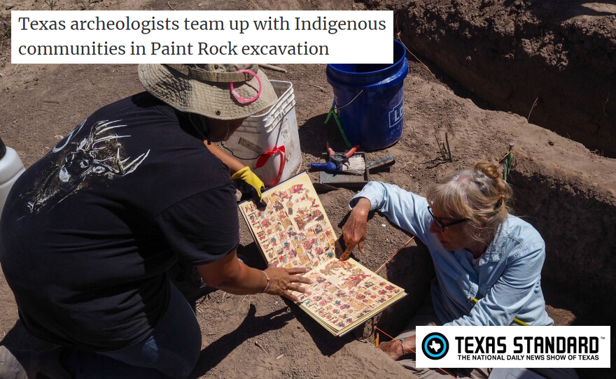
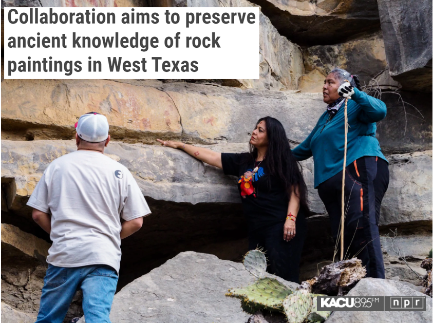

About Us
| Paint Rock Research is a group of researchers dedicated to centering Indigenous knowledge in the interpretation of Indigenous sites. We are an entirely volunteer run group, and have representatives from the Coahuilteco, Comanche, and Lipan Apache Nations, as well as many academic institutions. We believe that this sacred site has long been a site of celebration and education, and we hope to continue that legacy in our work. Our research includes both recording elder interpretations of rock art, as well as archaeological excavations and technical analysis of rock art. Our research is funded both by grants and private donations (see Sponsors page for more info, and if you're interested in making a donation, please email Jeremy Elliott at jeremy.elliott@acu.edu). |
Paint Rock Research in the News
|  |  |